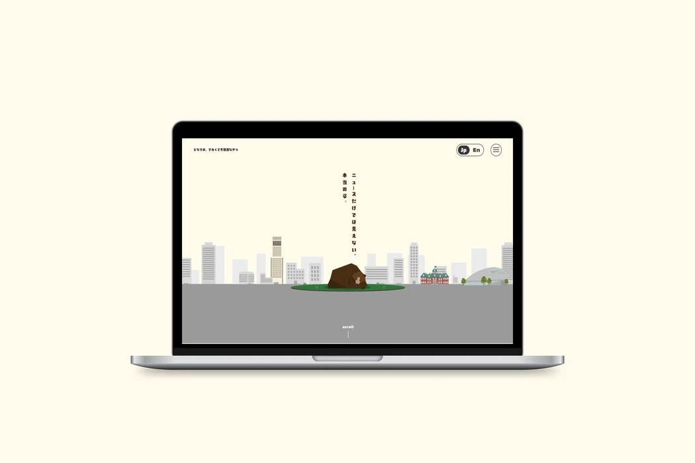
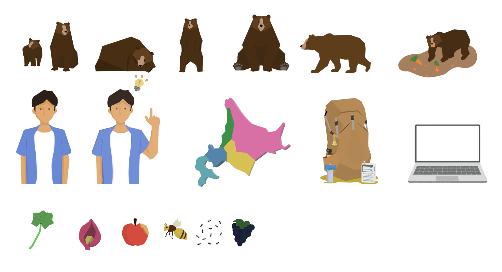
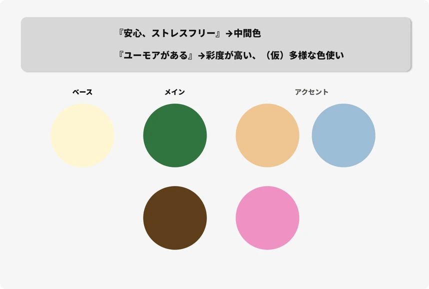
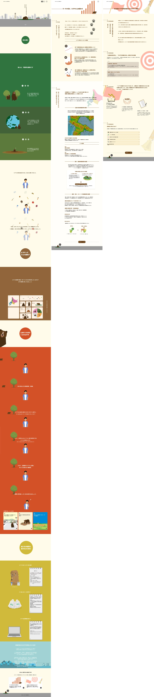

課題解決サイト
- #自主制作
- #Webデザイン
学内コンテストで、最近の環境問題である「ヒグマによる人身事故」に着目し、その課題を解決するサイトを制作しました。
使っているソフト
Figma
Illustrator
制作期間
2ヶ月
メンバー
デザイナー
プログラマー
担当した役割
デザイナー

Background
北海道の問題
- 北海道のヒグマの個体数の増加
北海道のヒグマの個体数は、1990年の約5800等から1万以上に増加しています、主な原因として、春グマ駆除廃止による生存率上昇です。さらに急増したエゾシカの採食やデントコーンなどの農作物の利用によるヒグマの栄養状態の改善が時代とともに改善されてきました。これらにより、ヒグマの生存率や繁殖率が向上し、個体数が年々増加傾向にあります。
- ヒグマによる人身事故の増加
ヒグマによる人身事故が、山菜取りやレジャー中の遭遇に加え、生活圏への出没増加によりリスクが高まっています。遭遇経験の乏しさや過度の恐怖心から適切な判断や予防行動が取れないことが原因であり、鈴や熊撃退スプレーの基本的な知識が知ることが必要です。
現状の課題
熊の断片的な情報（ニュースでの報道）が原因で本来の特性や習性を誤って認知されていること
テレビやSNSなどの断片的なニュース報道では、市街地に出没したヒグマが、危険な猛獣としての側面ばかりが強調されがちです。その結果、無差別に人を襲う凶暴な動物という誤った認識が広まり、本来のヒグマの性格や行動特性を知らずに、必要以上に嫌悪感を抱く人が増えています。
ターゲット
ヒグマのことはよく知らないけど、漠然と恐怖感や不安感のある北海道に住む大学生
豊かな森や自然に囲まれた北海道では、ドライブやキャンプ、山菜取りなどレジャーを楽しむ機会が多く、ヒグマと遭遇するリスクを抱えています。過度な恐怖や偏見をなくし、正しい知識と予防行動を促す上で、最も届けたい対象です。
コンセプト
「北海道の若者」が、「エンリッチングに情報」を得ることで、「ヒグマに対する誤認の解消」を達成するサイト。
既存のヒグマ情報サイトは正しく伝える一方で堅苦しく、勉強している感が出てしまい若者が飽きやすいと考えました。そこで本サイトでは、親しみやすいイラストや見ていて飽きないアニメーションを取り入れ、気軽に知識を学ぶことができるサイトを目標としました。
Design
真面目な情報を楽しく伝えるイラスト
より気軽にサイトを見てもらうために、イラストはカジュアルで親しみやすいイラストを制作しました。

見ている人を飽きさせないアニメーション機能
閲覧者の離脱を防ぎ、最後まで興味を持ってもらうための工夫として、サイトの各ポイントにアニメーションを取り入れました。
- ローディング
- 各セクション
熊の不器用さを表現するカクカクしたフォント
熊の不器用さをイラスト親文章などの表現に頼らず、タイポグラフィの表現によって視覚的に伝えるアプローチをしました。そこでフォントには、直線的で飾りのない素朴さの持つ「ADS-strong」を採用しました。
安心感とユーモアがあるカラー設計
ベースカラーとメインカラーには、画面全体に落ち着きと心地よさをもたらす中間色を採用しています。刺激を抑えた柔らかいイエローのベースと、深みのあるグリーンやブラウンのメインカラーが、見る人に圧迫感を与えない安定した空間を作り出します。また、アクセントカラーには、明るく彩度の高いオレンジ、ブルー、ピンクを組み合わせることで、遊び心と多様性を表現しています。シックなベースに対してポップなアクセントを効かせることで、親しみやすさと楽しさを演出します。

サイトデザイン
